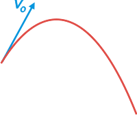
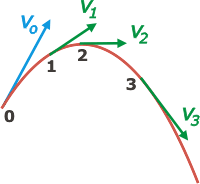
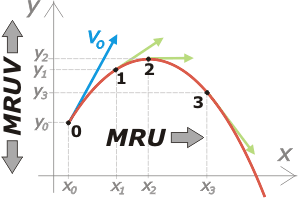
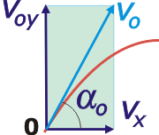

NO ME SALEN
APUNTES TEORICOS DE FÍSICA Y BIOFÍSICA DEL CBC
|
|

|
Tiro oblicuo, TO
Si se arroja un objeto en forma oblicua (u horizontal) la trayectoria que describe será una parábola vertical y recibe el nombre de tiro oblicuo, TO. |
|
|  |
La condición para que ocurra este movimiento particular que voy a describir aquí es que las dimensiones de la trayectoria no sean muy grandes y que la interacción con el aire (fundamentalmente el rozamiento) sea despreciable. Por ejemplo, si lo que se arroja es un avioncito de papel, no se moverá en un tiro oblicuo. Tampoco una tiza si sale disparada a 300 m/s.
Pero sí, por ejemplo, una piedra que vuela unos 20 metros. |
|
|
|
| La velocidad no sólo va cambiando de dirección sino también de módulo, y esa variación, para colmo, no es constante. |
|
|
|  |
Como ves, la velocidad siempre ha de representarse tangente a la trayectoria (no por una regla de cortesía, sino porque así se comporta el universo), no sólo para los TO sino para cualquier otro movimiento.
Acá la representé en cuatro posiciones cualesquiera que llamé 0, 1, 2 y 3.
En suma: no parece un movimiento sencillo. |
|
|
|
| La trampa para describir fácilmente (y luego, en dinámica, comprender) este movimiento es referirlo a dos ejes coordenados cartesianos, uno horizontal y otro vertical. |
|
|
|  |
Entonces se observa que el desplazamiento horizontal es uniforme y el desplazamiento verical uniformemente variado con una aceleración igual a g.
Entonces las posiciones del móvil se expresarán en función de sus coordenadas. Por ejemplo la posición 1 estará dada por el par ordenado
P1 = ( x1 ; y1 )
|
|
|
|
¿Por qué se comporta horizontalmente de esa manera, con velocidad constante, y por qué verticalmente con velocidad variable? Eso te lo va a contar la dinámica, falta un cacho, por ahora aceptá que es así, y disfrutalo, porque el hecho de que se comporte de esa manera nos resuelve el problema de hacer cinemática, es decir dar una expresión que nos cuente cuál es la posición de móvil en cualquier instante de tiempo. O sea la ecuación horaria.
En el caso del TO serán tres ecuaciones horarias que actuarán en forma conjunta:
x = xo + vx . ( t – to )
y = yo + voy . ( t – to ) + ½ g . ( t – to )²
vy = voy + g . ( t – to )
Ante cada TO que enfrentes deberás ser capaz de armar tres ecuaciones como éstas. Para ello deberás encontrar (o decidir) seis constantes: to, xo, yo, vx, voy, g. Luego el movimiento no tendrá más secretos para vos. Todas las infinitas posiciones por las que pasa el móvil en cada instante de tiempo están ahí adentro, sólo hay que preguntar y aparecen.
Miremos este ejemplo. Supongamos que tenemos un tiro oblicuo que está descipto por estas ecuaciones:
x = 20 m + 30 m/s . t
y = 8 m + 40 m/s . t — 5 m/s² . t²
vy = 40 m/s — 10 m/s² . t
Le voy a ir dando valores a t y obteniendo las posiciones y velocidades correspondientes a esos instantes. Y los voy volcando en la tabla. Por ejemplo donde dice t escribo (-2 s), y hago las cuentitas. La de posición x(-2s) me da –40 m, la posición y(-2s) (en la ecuación tuve que reemplazar por -2 s dos veces) da –92 m, y la de velocidad vertical vy(-2s) nos da 60 m/s. Y así. |
|
Las variables las representé en rojo y las constantes en azul.
|
| t (s) |
x (m) |
y (m) |
vx (m/s) |
vy (m/s) |
v (m/s) |
| -2 |
-40 |
-92 |
30 |
60 |
67 |
| 0 |
20 |
8 |
30 |
40 |
50 |
| 2 |
80 |
68 |
30 |
20 |
36 |
| 4 |
140 |
88 |
30 |
0 |
30 |
| 6 |
200 |
68 |
30 |
-20 |
36 |
| 8 |
260 |
8 |
30 |
-40 |
50 |
|
|
|
|
La última columna, la de la velocidad real del móvil, te la explico más abajo.
Vos podrías agregarles más preguntas a esas ecuaciones... por ejemplo para instantes impares. O en qué instante pasa por la posición cero, o dónde se halla en el instante 3,5 s, o en el segundo 168. Acordate que la ecuación no sabe cuándo empieza ni cuándo termina el movimiento.
También voy volcando los valores encontrados a los gráficos posición-tiempo, velocidad-tiempo y aceleración-tiempo (para cada eje). |
|
|
|
|
las escalas de tiempo son iguales en cada columna de gráficos, eso recalca coincidencias importantes |
Vamos a la cuestión de la velocidades. En casi todos los ejercicios no vas a encontrar como dato las constantes que necesitamos: vx y voy. Pero en cambio nos van a dar la velocidad real de lanzamiento, vo y el ángulo que forma con la horizontal, αo. A partir de esa información vos podés conocer las constantes necesarias para armar las ecuaciones.
vx y voy son las componentes o proyecciones de la velocidad inicial (real), y se obtienen así: |
|
para este capítulo de la cinemática va a ser importante que refresques los conceptos de vectores |
|  |
vx = vo . cos αo
voy = vo . sen αo
Viceversa, si se conocen las componentes de la velocidad en cualquier instante, se puede conocer el módulo de la velocidad con ayuda del teorema de Pitágoras. Por ejemplo, en el instante 6 segundos de nuestro ejemplo:
v(6s)² = vx² + vy(6s)²
v(6s)² = (30 m/s)² + (-20 m/s)²
v(6s) = 36 m/s
|
|
|
|
Y si quisiera saber qué ángulo forma la velocidad con la horizontal en ese instante basta con hacer la operación inversa de la tangente entre las componentes de la velocidad.
α(6s) = arc tg (vy(6s) / vx)
Alfa (a los 6 segundos) es el ángulo cuya tengente es igual al cociente entre la velocidad vertical en ese instante y la velocidad horizontal.
α(6s) = arc tg (-20 m/s /30 m/s)
α(6s) = arc tg (-0,66)
α(6s) = -34°
Una operación que asusta por el nombre pero que para la calculadora es una pavada. |
|
en las calculadoras científicas, la operación
arc tg
se indica así:
tg-1
o así
INV tg
(MODO DEG)
|
Ecuación de la trayectoria. Esta parte te va a responder la pregunta de por qué la trayectoria de un TO es un arco de parábola y no de otra figura. Para hacértelo un poco más liviano voy a suponer un TO en el que tanto la posición inicial como el instante de tiempo inicial valen cero. En ese caso las ecuaciones de posición serán éstas:
x = vo . cos αo . t
y = vo . sen αo . t + ½ g . t²
Si de la ecuación de x despejamos el tiempo y lo que nos da lo metemos en la de y...
|
|
|
| y = x . tg αo |
+ |
g . x² |
|
|
| 2 vo² . cos² αo |
|
|
|
| que empareja cada posición de avance, x, con la altura correspondiente, y, es decir, describe la trayectoria. Y como la variable x aparece al cuadrado, no cabe duda de que se trata de un arco de parábola. |
|
|
CHISMES IMPORTANTES: |
|
|
- Una de las características más relevantes de todo TO es que su trayectoria está inscripta en un plano vertical.
- Galileo fue el genio que le encontró la vuelta al asunto de los TO. Para él era importantísimo, ya que estaba metido de lleno en el problema del movimiento o inmovilidad de la Tierra. Eso lo hizo pensar la idea de descomposición de los movimientos y de ahí surgió la "vuelta" que hace posible este abordaje de los TO y -más adelante- su comprensión dinámica: por qué se comporta de esta manera, horizontalmente como un MRU y verticalmente como un MRUV.
- Volvé a mirar la tabla de nuestro ejemplo. Fijate que la velocidad del tiro oblicuo no se anula nunca. Ni siquiera en el punto más alto de la trayectoria. Lo que se anula (sólo a veces) es la componente vertical de la velocidad.
|
|
|
| PREGUNTAS CAPCIOSAS: |
|
|
- La velocidad de un TO, ¿puede llegar a ser vertical?
- ¿Por qué es que si el TO llega muy alto, entonces la trayectoria no es una parábola (aún en el caso en que no haya interacciones con el aire)? Aclaración: esta pregunta sólo se puede contestar luego de conocer la dinámica del TO.
|
|
 |
| |
|
| Me embola escribir m/s (metro sobre segundo) de esa forma, con la raya oblicua. Lo correcto es escribir la m justo arriba de la s y con la raya horizontal. Lo mismo con ½. |
|
| |
|
| Algunos derechos reservados.
Se permite su reproducción citando la fuente. Última actualización jul-12. Buenos Aires, Argentina. |
|
|
 |
| |
|
|
|